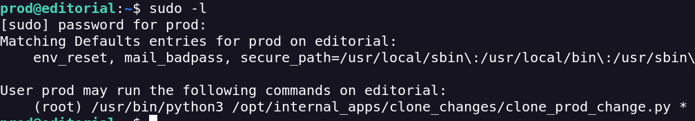

Editorial
Realizo un escaneo de puertos
Encuentro el puerto 21 (ssh) y el puerto 80 (http) abiertos
Añado el dns a mi lista /etc/hosts
Hay una sección que es Publish with us que tiene potencial como vector de ataque
Puesto que puedo subir archivos y hay textbox
Hago una enumeracion de subdirectorios y de dns para ver si hay algún login o algún vector con potencial.
En la enumeración de subdirectorios encuentro el endpoint de upload. que es el mismo que menciono arriba
Para saber que vulnerabilidad podemos usar voy a interceptar el tráfico con Burpsuite para estudiar la reacción del servidor
Al parecer en book information realiza una busqueda dentro del propio servidor por lo que puede que sea vulnerable a SSRF (Server Side Request Forgery)

Cuando una aplicación hace una llamada a una URL (por ejemplo a una API), un atacante puede podría editar la consulta para que esa llamada se haga a otra dirección.
Para que se ejecute esto tengo que darle al botón preview
Si en la url le mando el localhost y el puerto vulnerable me devuelve esto.
Ahora a la ruta de arriba le realizo un GET, el cual me devuelve el siguiente mensaje
Como se puede ver hay distintos endpoints
El endpoint authors parece un buen punto
Envío la solicitud y me da las creds de un usuario
Accedo a través de SSH y obtengo la flag de user.txt
Tras rebuscar encuentro dentro de la carpeta apps un directorio .git

En busca de commits
En la carpeta logs encontramos diferentes commits
Uno muy interesante es este
1e84a036b2f33c59e2390730699a488c65643d28
Dentro del commit si bajamos un poco encontramos otro usuario llamado prod con sus respectivas crendeciales
Dentro del user prod puedo ver que me permite ejecutar un comando como root

Miro que hace la script.
Al parecer usa una librería para clonar
Esta librería es vulnerable a un RCE CVE-2022-24439
Ejecuto el siguiente comando y puedo obtener el ver la info del archivo root.txt